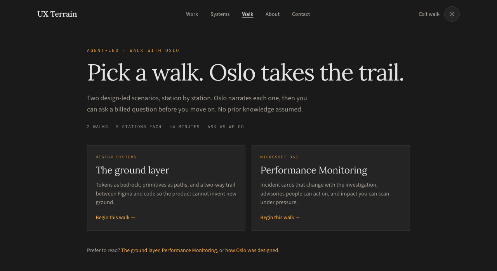
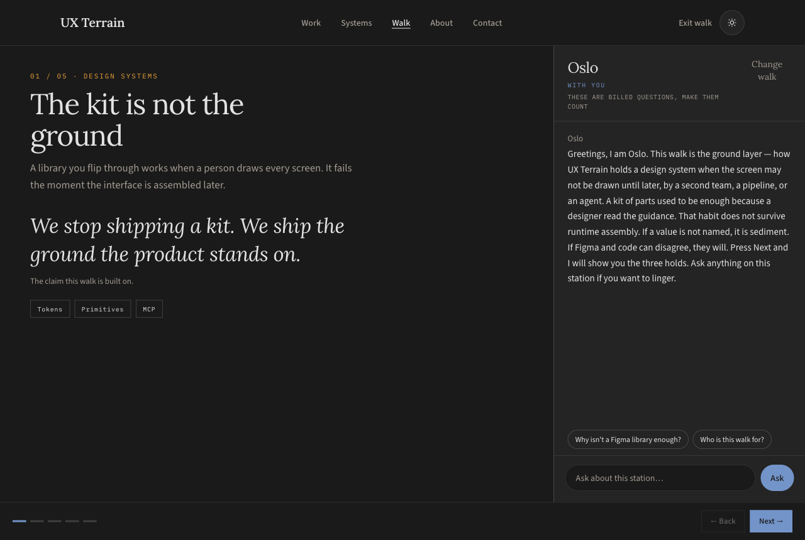
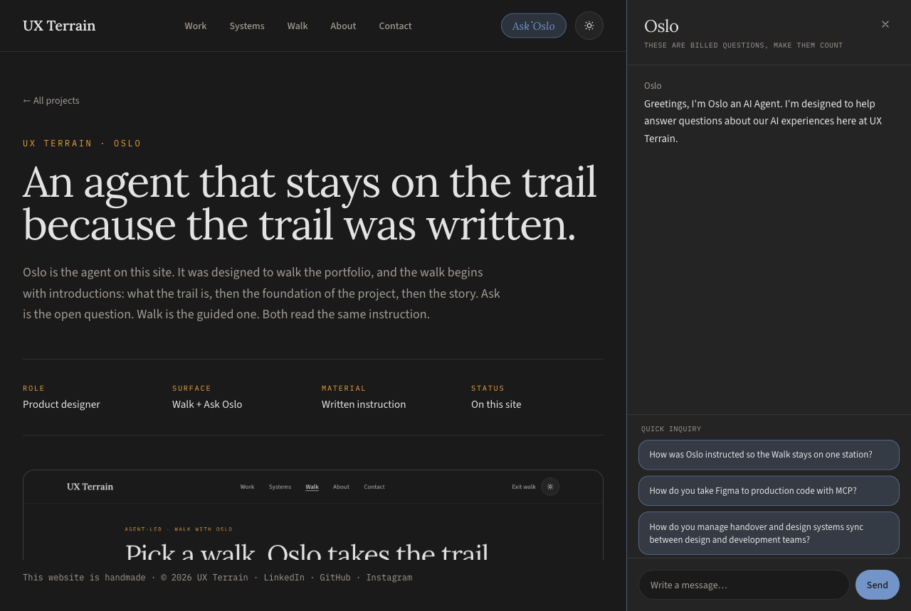

Oslo · UX Terrain Agents
A portfolio that defends the thinking, instead of only displaying it.
For over a decade, the digital design portfolio has been flattened to pass a hiring filter. Designers learned to trade messy human realities for sanitized bullets, real trade-offs for clean metrics, and rigorous debate for frictionless scrolling.
The result looks pristine on a grid and tells you little about how a designer thinks under pressure. These are brochures designed for compliance, not proof of capability.
From exhibition to dialogue
Oslo began as a provocation. What if a portfolio defended the thinking, instead of only displaying it?
Design is conversational, argumentative, and iterative. A static screen keeps a decision’s final state and loses the journey: the constraints that were accepted, the paths that were abandoned, and the architectural convictions that held the work together.
Oslo is a purpose-built product design agent, embedded in the architecture of UX Terrain. A recruiter, a hiring manager, or a design peer can interrogate an architectural choice, test a rationale, and walk a complex system in real time. The portfolio leaves the museum of finished artifacts and becomes an active intellectual partner.
This case is the systems design, the rationale, and the technical execution behind that partner. Oslo is a native feature of the practice, wired into the site itself.

Why it matters to the visitor
For a hiring manager, a design director, or a peer, the value is cutting through the noise. Watching a model generate text is not the work. The work is a bounded conversation about decisions that shipped.
Zero fluff, high signal
Oslo is fenced to shipped work and the rationale that was written down. It does not drift into vague generalities, and it does not invent a project.
The pacing of a real walk
Trails and stations respect the visitor’s time. The foundational claim lands before the interface detail. Five stops, a few minutes, then the questions.
Active interrogation
The visitor can press the weak points, ask about constraints, and test the logic while the page is still open.
The foundation, then the story.
The script precedes the system. Before a screen, a card, or a cut is shown, Oslo establishes the ground floor: the core claim and the real job to be done. Once that bedrock is laid, the details sharpen. Later stations succeed precisely because the visitor already knows the ground they stand on.
The picker
What the walk is, before you enter. Two trails, a few minutes, and no prior knowledge assumed.
The first station
The foundation, spoken. The ground layer opens on its claim. Performance Monitoring opens on the job.
Then the story
Holds, cards, the cut, the chart. Specific, because the foundation has already landed.
The instruction is the design.
Before any panel was wired, the material was written: who speaks, what is in bounds, which facts a case is allowed to rest on, and what to say at each stop. That document is the product. The interface only performs it.
Persona
Oslo, for this practice. A distinct voice, a fixed tone, and a name that doesn't trade away.
Fence
The portfolio, the cases, the ground layer. Everything else gets the same polite no.
Cases
Facts written down so an answer cannot drift into a project that was never shipped.
Stations
What to say at this stop, paired with fixed guardrails for the dialogue. Not the whole walk at once.
A station is a designed stop.
Each stop is sized before it is shown. The written line has a word budget, and both walks are held to it: five stations on the ground layer, five on Performance Monitoring, the same narrow band.
Every stop carries two questions. Next belongs to the visitor. It is the only control that advances the trail.
Words in the script
Questions per station
If the line is not written, Oslo does not get to invent the walk.
The panel is the other feature.
Walk is Oslo leading. The panel is the visitor leading. It opens from any page, and the page stays beside it. There is no station and no Next. You bring a question, or you take one written for the page you are already on. The answer still comes from the same brief.
The page stays
Ask Oslo from the header, a case, or the hero. The site makes room. You do not leave the work you were reading.
A written question
Three invitations, written for that page. On a case, the first one is about the case. The field is there when none of them is your question.
The fence
The practice, the cases, the ground layer. Off that map, Oslo declines. The walk and the panel share this line.
The walk teaches the foundation in order. The panel starts from the question you already have.
One route. The brief, then the model.
Both features call the same endpoint. The panel sends the question. The walk sends the question and the station it is standing on — the title and the claim — and asks Oslo to stay there. The server has already loaded the written instruction. It attaches that as the system message, asks gpt-4o-mini to answer, and streams the tokens back as plain text. The key stays on the server.
-
01
Two clients
The panel posts a message. The walk posts the message plus the station, and cancels the request if you leave that stop.
-
02
One route
/api/chat. An empty message is refused. A message past the length cap is refused. A missing key never reaches the model.
-
03
Brief, then model
The instruction is the system message, read once when the server starts. There is no retrieval index. The model streams.
-
04
Plain text
Tokens write into the thread as they arrive. Markdown is stripped. A failed key, quota, or stream becomes the reply you can read.
While a reply is in flight, the field and the written questions wait, so a second question cannot stack on the first.
The model is the unreliable part. The brief is loaded before it speaks.
What I owned
- The instruction: persona, the fence, case facts, and a script for every station.
- Walk as a guided surface — introductions, one station, a rail, and Next.
- The panel as its own surface — the page stays, the questions are written for where you are, and the fence holds.
- The route both features share — one endpoint, the instruction as the system message, and a streamed reply in plain text.
01
The station
The visual stays on the left. Oslo speaks from the rail, offers two questions, and will not advance the trail on its own.

02
The panel
The case stays on the left. Oslo opens on the right, with a greeting and three questions written for this page.

The medium is the proof
Building Oslo is the case, because the system has to perform the thesis. A portfolio that can be questioned is the evidence. The interface is the argument, running on the same site as the work.
The future of this practice is intelligent, highly bounded systems that respect context, honor constraints, and raise how a complex idea gets communicated.
The bounded system is the proof. It respects the context, honors the constraint, and can be questioned.